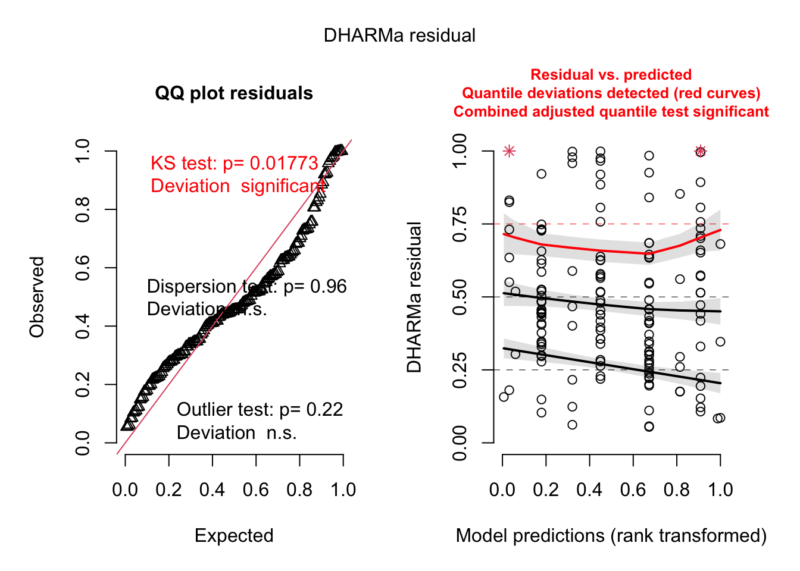

5 Analysis of the variation of the number of tentacles after grafting
5.1 Transmissible tumors dataset
5.1.1 Random effects selection
## ID Manipulator donor donor_status donor_tentacle receiver
## 1 : 1 Justine: 60 SpB:93 NT:83 Min. : 4.00 SpB:74
## 2 : 1 Océane :100 Rob:67 T :77 1st Qu.: 6.00 TV :86
## 3 : 1 Median : 7.00
## 4 : 1 Mean : 7.85
## 13 : 1 3rd Qu.: 9.00
## 14 : 1 Max. :18.00
## (Other):154
## receiver_tentacle lot date_draft abnormalities dateT
## Min. :3.000 22 :18 12/04 :18 Excluded: 0 Min. : 6.00
## 1st Qu.:5.000 20 :10 29/03 :17 Lost : 1 1st Qu.:20.00
## Median :6.000 16 : 9 08/04 :15 Normal :151 Median :27.00
## Mean :5.656 23 : 9 05/04 :14 Sick : 8 Mean :29.97
## 3rd Qu.:6.000 5 : 8 25/01 :14 3rd Qu.:40.00
## Max. :8.000 8 : 8 04/02 :13 Max. :70.00
## (Other):98 (Other):69 NA's :71
## Tumors dateD Death tenta_1 tenta_2 tenta_3
## 0:70 Min. :13.00 0:101 Min. :3.000 Min. :2.000 Min. :0.000
## 1:90 1st Qu.:34.00 1: 59 1st Qu.:5.000 1st Qu.:5.000 1st Qu.:5.000
## Median :42.00 Median :6.000 Median :6.000 Median :6.000
## Mean :44.58 Mean :5.569 Mean :5.538 Mean :5.582
## 3rd Qu.:56.25 3rd Qu.:6.000 3rd Qu.:6.000 3rd Qu.:6.000
## Max. :70.00 Max. :8.000 Max. :8.000 Max. :9.000
## NA's :100 NA's :2 NA's :7
## tenta_4 tenta_5 tenta_6 tenta_7
## Min. : 0.000 Min. : 0.000 Min. : 1.000 Min. : 2.00
## 1st Qu.: 5.000 1st Qu.: 5.000 1st Qu.: 5.000 1st Qu.: 5.00
## Median : 6.000 Median : 6.000 Median : 6.000 Median : 6.00
## Mean : 5.836 Mean : 5.789 Mean : 5.822 Mean : 6.05
## 3rd Qu.: 7.000 3rd Qu.: 7.000 3rd Qu.: 7.000 3rd Qu.: 7.00
## Max. :13.000 Max. :10.000 Max. :14.000 Max. :15.00
## NA's :8 NA's :18 NA's :31 NA's :40
## tenta_8 tenta_9 tenta_10 buds_1
## Min. : 0.000 Min. : 0.000 Min. : 0.000 Min. :0.0000
## 1st Qu.: 5.000 1st Qu.: 5.000 1st Qu.: 5.000 1st Qu.:0.0000
## Median : 6.000 Median : 6.000 Median : 6.000 Median :0.0000
## Mean : 5.868 Mean : 5.763 Mean : 5.959 Mean :0.3187
## 3rd Qu.: 7.000 3rd Qu.: 7.000 3rd Qu.: 7.000 3rd Qu.:0.0000
## Max. :14.000 Max. :13.000 Max. :13.000 Max. :4.0000
## NA's :46 NA's :67 NA's :62
## buds_2 buds_3 buds_4 buds_5
## Min. :0.0000 Min. : 0.000 Min. : 0.000 Min. : 0.000
## 1st Qu.:0.0000 1st Qu.: 0.000 1st Qu.: 1.000 1st Qu.: 2.000
## Median :0.0000 Median : 1.000 Median : 3.000 Median : 5.500
## Mean :0.9367 Mean : 2.203 Mean : 3.921 Mean : 6.042
## 3rd Qu.:1.7500 3rd Qu.: 3.000 3rd Qu.: 6.000 3rd Qu.: 9.000
## Max. :6.0000 Max. :11.000 Max. :15.000 Max. :18.000
## NA's :2 NA's :7 NA's :8 NA's :18
## buds_6 buds_7 buds_8 buds_9
## Min. : 0.000 Min. : 0.000 Min. : 0.00 Min. : 0.00
## 1st Qu.: 4.000 1st Qu.: 4.000 1st Qu.: 5.00 1st Qu.: 4.00
## Median : 8.000 Median : 8.500 Median : 9.00 Median :10.00
## Mean : 7.868 Mean : 9.492 Mean :10.82 Mean :11.38
## 3rd Qu.:11.000 3rd Qu.:14.000 3rd Qu.:16.00 3rd Qu.:17.00
## Max. :23.000 Max. :27.000 Max. :33.00 Max. :39.00
## NA's :31 NA's :40 NA's :46 NA's :67
## buds_10 Taille tumeur avant congelation Date congelation
## Min. : 0.00 Min. :0.00 Length:160
## 1st Qu.: 6.00 1st Qu.:0.00 Class :character
## Median :13.00 Median :1.00 Mode :character
## Mean :13.43 Mean :2.01
## 3rd Qu.:19.00 3rd Qu.:4.00
## Max. :43.00 Max. :6.00
## NA's :62 NA's :63
## tenta_max diff_max diff_maxR
## Min. : 3.000 Min. : 0.000 Min. :-2.000
## 1st Qu.: 6.000 1st Qu.: 0.000 1st Qu.: 0.000
## Median : 6.000 Median : 0.000 Median : 0.000
## Mean : 6.737 Mean : 1.169 Mean : 1.081
## 3rd Qu.: 7.000 3rd Qu.: 2.000 3rd Qu.: 2.000
## Max. :15.000 Max. :11.000 Max. :10.000
## m1 <- glmmTMB(data=donor_trans, diff_maxR+2 ~ donor +donor_status + receiver + donor_tentacle + receiver_tentacle + (1|lot) + (1|date_draft), family = poisson, REML = T)
m2 <- glmmTMB(data=donor_trans, diff_maxR+2 ~ donor +donor_status + receiver + donor_tentacle + receiver_tentacle + (1|date_draft/lot), family = poisson, REML = T)
m3 <- glmmTMB(data=donor_trans, diff_maxR+2 ~ donor +donor_status + receiver + donor_tentacle + receiver_tentacle + (1|lot), family = poisson, REML = T)
m4 <- glmmTMB(data=donor_trans, diff_maxR+2 ~ donor +donor_status + receiver + donor_tentacle + receiver_tentacle + (1|date_draft), family = poisson, REML = T)
m5 <- glmmTMB(data=donor_trans, diff_maxR+2 ~ donor +donor_status + receiver + donor_tentacle + receiver_tentacle, family = poisson, REML = T)
AICc(m1, m2, m3, m4, m5) ## df AICc
## m1 8 621.6455
## m2 8 621.6455
## m3 7 620.2526
## m4 7 619.4657
## m5 6 620.6635
There is no need to include any of the potential random effects we’ve measured.
5.1.2 Fixed effects selection
Given the number of potential effects to evaluate, we have opted for an automatic selection of fixed effects
options(na.action = "na.omit")
mT_trans_full = glmmTMB(data=donor_trans, diff_maxR+2 ~ donor * donor_status * receiver + receiver_tentacle +donor_tentacle, family = poisson, REML = F)
options(na.action = "na.fail")
dd2 = dredge(mT_trans_full, rank = "AICc")## Fixed terms are "cond((Int))" and "disp((Int))"## SpB Rob
## 93 675.1.2.1 Table of the results of the best fitted models (lower AICc+2)
| diff_maxR + 2 | diff_maxR + 2 | diff_maxR + 2 | |||||||
|---|---|---|---|---|---|---|---|---|---|
| Predictors | Incidence Rate Ratios | CI | p | Incidence Rate Ratios | CI | p | Incidence Rate Ratios | CI | p |
| donor [Rob] | 1.26 | 0.84 – 1.87 | 0.263 | ||||||
| donor status [T] | 1.82 | 1.28 – 2.58 | 0.001 | 1.43 | 1.20 – 1.72 | <0.001 | 1.45 | 1.21 – 1.73 | <0.001 |
| receiver [TV] | 0.92 | 0.64 – 1.32 | 0.661 | 0.86 | 0.72 – 1.04 | 0.114 | |||
| receiver tentacle | 0.83 | 0.74 – 0.93 | 0.001 | 0.81 | 0.73 – 0.91 | <0.001 | 0.83 | 0.74 – 0.93 | 0.001 |
|
donor status [T] × receiver [TV] |
0.74 | 0.46 – 1.19 | 0.219 | ||||||
|
donor [Rob] × donor status [T] |
0.47 | 0.28 – 0.80 | 0.006 | ||||||
|
donor [Rob] × receiver [TV] |
0.76 | 0.44 – 1.31 | 0.325 | ||||||
|
(donor [Rob] × donor status [T]) × receiver [TV] |
2.75 | 1.32 – 5.75 | 0.007 | ||||||
| Observations | 160 | 160 | 160 | ||||||
best_model_tentaTrans <- glmmTMB(data=donor_trans,diff_maxR+2 ~ donor_status + receiver_tentacle, family = poisson, REML = T)
tab_model(best_model_tentaTrans, show.intercept = F, show.r2=F)| diff_maxR + 2 | |||
|---|---|---|---|
| Predictors | Incidence Rate Ratios | CI | p |
| donor status [T] | 1.45 | 1.21 – 1.73 | <0.001 |
| receiver tentacle | 0.83 | 0.74 – 0.93 | 0.001 |
| Observations | 160 | ||
On average, an individual transplanted with transmitted tumors developed 1.45 additional tentacles, whereas individuals transplanted with healthy tissue developed only one additional tentacle. Furthermore, when the recipient already had a relatively high number of tentacles, the increase in the number of tentacles after transplantation was reduced (IRR=0.83 [0.74 - 0.93], p=0.001), highlighting a possible threshold effect.

The model is not perfectly equilibrated, however changinf for another family such as negative binomial or zero-truncated does not improve significantly the quality of the models or their results.
5.2 Spontaneous tumors dataset
5.2.1 Random effects selection
donor_spont <- subset(donor_spont, donor_spont$diff_maxR!="NA")
m1 <- glmmTMB(data=donor_trans, diff_maxR+2 ~ donor + Tumors +donor_status + receiver + donor_tentacle + receiver_tentacle + (1|lot) + (1|date_draft), family = poisson, REML = T)
m2 <- glmmTMB(data=donor_trans, diff_maxR+2 ~ donor + Tumors +donor_status + receiver + donor_tentacle + receiver_tentacle + (1|date_draft/lot), family = poisson, REML = T)
m3 <- glmmTMB(data=donor_trans, diff_maxR+2 ~ donor + Tumors +donor_status + receiver + donor_tentacle + receiver_tentacle + (1|lot), family = poisson, REML = T)
m4 <- glmmTMB(data=donor_trans, diff_maxR+2 ~ donor + Tumors +donor_status + receiver + donor_tentacle + receiver_tentacle + (1|date_draft), family = poisson, REML = T)
m5 <- glmmTMB(data=donor_trans, diff_maxR+2 ~ donor + Tumors +donor_status + receiver + donor_tentacle + receiver_tentacle, family = poisson, REML = T)
AICc(m1, m2, m3, m4, m5) ## df AICc
## m1 9 616.8626
## m2 9 616.8626
## m3 8 615.5684
## m4 8 614.6162
## m5 7 614.7731
There is no need to include any of the potential random effects we’ve measured.
5.2.2 Fixed effects selection
Given the number of potential effects to evaluate, we have opted for an automatic selection of fixed effects
options(na.action = "na.omit")
mT_spont_full = glmmTMB(data=donor_spont, diff_maxR+2 ~ donor * donor_status * receiver + receiver_tentacle +donor_tentacle, family = poisson)
options(na.action = "na.fail")
dd = dredge(mT_spont_full, rank = "AICc")## Fixed terms are "cond((Int))" and "disp((Int))"5.2.2.1 Table of the results of the best fitted models (lower AICc+2)
| diff_maxR + 2 | diff_maxR + 2 | diff_maxR + 2 | diff_maxR + 2 | diff_maxR + 2 | |||||||||||
|---|---|---|---|---|---|---|---|---|---|---|---|---|---|---|---|
| Predictors | Incidence Rate Ratios | CI | p | Incidence Rate Ratios | CI | p | Incidence Rate Ratios | CI | p | Incidence Rate Ratios | CI | p | Incidence Rate Ratios | CI | p |
| receiver [TV] | 0.88 | 0.68 – 1.13 | 0.302 | ||||||||||||
| receiver tentacle | 0.94 | 0.81 – 1.10 | 0.440 | ||||||||||||
| donor [MT] | 0.91 | 0.69 – 1.19 | 0.498 | ||||||||||||
| donor tentacle | 0.96 | 0.84 – 1.10 | 0.579 | ||||||||||||
| Observations | 100 | 100 | 100 | 100 | 100 | ||||||||||
best_model_tentaSpont <- glmmTMB(data=donor_spont,diff_maxR+2 ~ 1, family = poisson, REML = T)
tab_model(best_model_tentaSpont, show.intercept = F, show.r2=F)| diff_maxR + 2 | |||
|---|---|---|---|
| Predictors | Incidence Rate Ratios | CI | p |
| NA | NA | NA | NA |
| Observations | 100 | ||
None of the effects measured had a significant impact on the variation in the number of tentacles after grafting in this group.